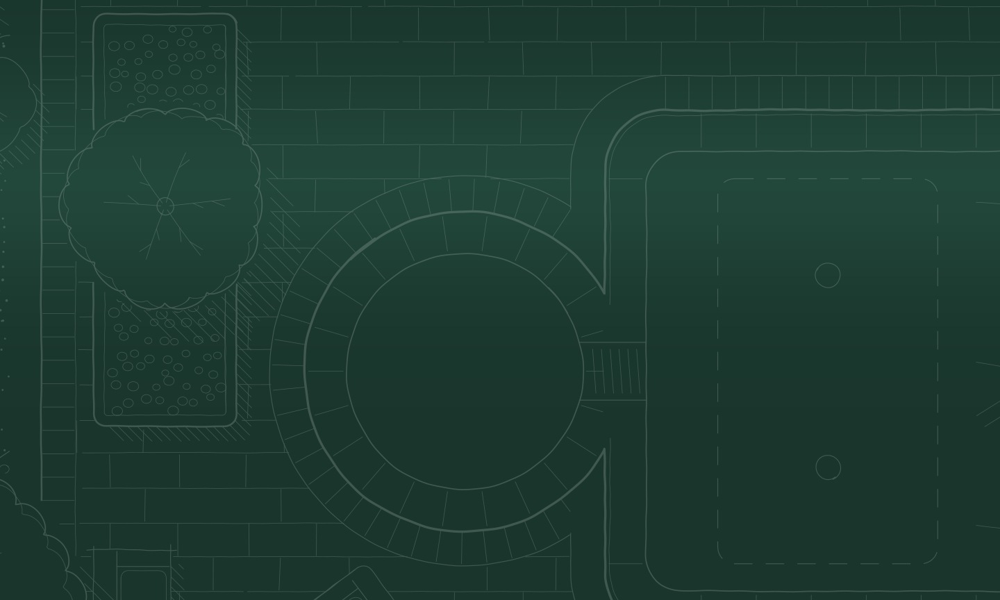
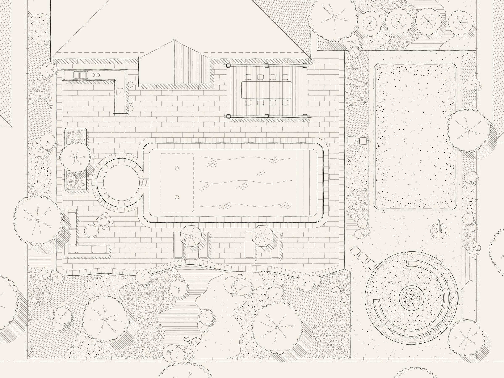

The same hand-inked plan, recomposed as a 4:3 landscape piece with every word taken out: no labels, no dimensions, no scale bar. The house runs across the top. The pool and spa sit in the middle with a border course around them. The fire circle opens toward the pool deck along three stepping stones. A deep planting band runs along the back fence, and the neighbours' roofs and trees sit at the edges.
#1E3E33, full
strength bottom-right and dissolving toward the top-left. The fade is only a suggestion; the master file is unfaded.

A 12,000 × 9,000 px transparent PNG is in the client folder,
02 Clients/san-diego-landscape-remodeling/Vehicle/siteplan-artwork/2026-11-19-4x3/.
| Artboard | 132 × 99 in (4:3) at 100% (9,504 × 7,128 pt). Vector, so it scales to any panel or print. |
| Drawing scale | 1 ft of yard = 1.1 in, the same as the wrap strip (Version 1), so both share line weights and texture. |
| Line weights | 1.6 to 6.6 pt strokes. When scaling in Illustrator, keep Scale Strokes & Effects on. |
| Colour | Supplied in ink #1F1F1F. Recolour to one shade lighter than the film, roughly 15–20%. |
| Wording | None. No labels, dimensions or scale bar; the north arrow has no letter. |
| Layers / groups | neighbours, site, terrace, garden, lawn, shadow, pool, fire, structures, furniture, house, planting, annotation. |
Version 2 (4:3 edition) · November 19, 2026. Version 1, the long wrap strip, is still the file for the car's side.